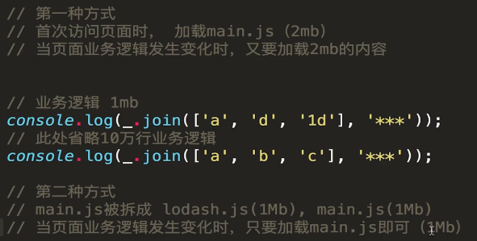
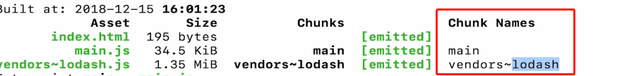

| 序号 | 标题 | 内容 | 备注 | 章节 |
|---|---|---|---|---|
| 1 | webpack是一个模块打包工具,自身只能翻译import这样的语句 | 除了能识别js module(import)的加载方式,commonjs(require,module.exports),amd,cmd的加载方式都能识别 | 2-2 | |
| 2 | 建议项目内安装webpack | 因为有的项目是webpack3,有的是4,全局只有一个版本,会出问题 | 2-3 | |
| 3 | npx | 执行当前目录下的node包中的命令,比如npx webpack,就是执行当前目录下的webpack,否则直接写webpack就会全局搜索了,搜不到就报错了 | ||
| 4 | npm init -y | 自动生成默认配置,不需要询问了 | ||
| 5 | npm info webpack | 可以查看webpack的所有信息,包括版本 | ||
| 6 | webpack默认配置文件名字叫webpack.config.js | 使用npx webpack --config abc.js可以修改默认webpack配置文件名字 | 2-4 | |
| 7 | npm script | 在package.json文件中的script中写入命令: "bundle": "webpack" 然后npm run bundle就可以代替npx webpack了 | 并且是先查找项目node_modules的依赖,找不到才查找全局,类似于npx | |
| 8 | 运行webpack的三种方式 | 1.全局 webpack 2.npx webpack 3.npm run | 并且是先查找项目node_modules的依赖,找不到才查找全局,类似于npx | |
| 9 | webpack cli | 使得我们可以在命令行中使用webpack命令 | ||
| 10 | entry: "./src/index.js" | 这是个简写,复杂写法为 entry: { main: './src/index.js' }, | 2-5 | |
| 11 | const a=require('img.jpg') | console.log这个a,输出的就是文件名(webpack file-loader) | file-loader原理:webpack打包时不知道如何打包图片,就去modules里面找, 找到test的正则,按照文件扩展名匹配,匹配到jpg使用file-loader处理,就开始打包, 首先把他图片拷贝到要输出的文件夹,并且改名,然后把图片的名字返回给require的变量 | 3-1 |
| 12 | loader是什么 | 就是对于特定文件打包处理的方案 | ||
| 13 | webpack默认只能处理.js结尾的文件 | |||
| 14 | 使用 Loader 打包静态资源（图片篇） | 笔记见webpack.config文件(lesson:3-2) | 3-2 | |
| 15 | 3-3 使用 Loader 打包静态资源（样式篇 - 上） | 笔记见webpack.config,postcss.config文件(lesson:3-3) | 3-3 | |
| 16 | 3-4 使用 Loader 打包静态资源（样式篇 - 下） | 笔记见webpack.config文件(lesson:3-4) | 官网->DOCUMENTATION->Asset Management | 3-4 |
| 16 | 3-5 使用 plugins 让打包更便捷 | 3-5 源码2-5 | ||
| 16 | 3-6 Entry 与 Output 的基础配置 | 作业:https://webpack.js.org/configuration/output https://webpack.docschina.org/guides/output-management/ |
源码2-6 | |
| 17 | 3-7 SourceMap 的配置 | 源码2-7 | ||
| 18 | 3-8 使用 WebpackDevServer 提升开发效率 | package.json文件添加 "scripts": { "watch": "webpack --watch" } | webpack --watch用来监控src文件夹内的改变,有改变会自动打包一次 | 视频3-8 源码2-8 其他见webpack.config.js lesson:3-8 |
| 19 | 3-9 Hot Module Replacement 热模块更新（1） | 视频3-9 源码2-9 | ||
| 20 | 3-10 Hot Module Replacement 热模块更新（2） |
开启热更新后默认只能热更新css,如果想热更新js代码,
还要在头文件index.js
中加入以下代码,accept表示要监控的变化的文件,
后面接一个变化后的回调函数(css-loader已经实现,所以可以默认热更新css)
,react,vue-loader也都已经实现
if(module.hot){
module.hot.accept('./test',()=>{
console.log("hot")
})
}
|
视频3-10 源码2-9 | |
| 21 | 3-11 使用 Babel 处理 ES6 语法（1） | lesson:3-11 | ||
| 22 | 3-12 使用 Babel 处理 ES6 语法（2） | lesson:3-12 | ||
| 23 | 3-13 Webpack 实现对React框架代码的打包 | 配置方法 | lesson:3-13 | |
| 24 | 4-1 Tree Shaking 概念详解 |
Tree Shaking翻译成中文叫摇树,把一棵树上没用的东西都摇掉 就是打包时只打进引入的方法或变量,没有引入的不打包,以减小打包后的体积 比如一个js文件中有add,minus两个方法,只引入了add,那么打包也会只有add |
Tree Shaking 只支持 ES Module(import方式引入) | lesson:4-1 源码3-1 |
| 25 | 4-2 Develoment 和 Production 模式的区分打包 |
Develoment:不压缩 Production:压缩 |
代码见1.package.js里面script下的"dev","bulid" 2.build文件夹下webpack.dev.js,webpack.prod.js 3.build文件夹下webpack.common.js |
lesson:4-2 源码3-2 |
| 26 | 4-3 Webpack 和 Code Splitting（1） | 1.业务代码中引入过大库(lodash)会导致打包后的main.js过大,加载时间过长 2.而lodash一般不会修改,但是业务代码会经常修改,打包一次,用户的缓存没了,又要重新加载,白白的重新加载了一次lodash 解决方法,可以利用多入口,生成多个文件,html模板会依次引入多个文件,先引入库(将lodash添加到全局变量),然后后面的业务代码就可以运行了  |
1.package.js文件下"dev-build" |
lesson:4-2 源码3-3 |
| 27 | 4-4 Webpack 和 Code Splitting（2） | 笔记:webpack.common.js文件,lesson:4-4 |
lesson:4-4 源码3-3 | |
| 28 | 4-5 SplitChunksPlugin 配置参数详解（1） | lesson:4-5 源码3-4 | ||
| 29 | 4-6 SplitChunksPlugin 配置参数详解（2） | https://webpack.js.org/plugins/split-chunks-plugin/ |
lesson:4-6 源码3-5 | |
| 30 | 4-7 Lazy Loading 懒加载，Chunk 是什么？ | Chunk:webpack打包生成了几个js文件,就是几个Chunk |  |
lesson:4-7 |